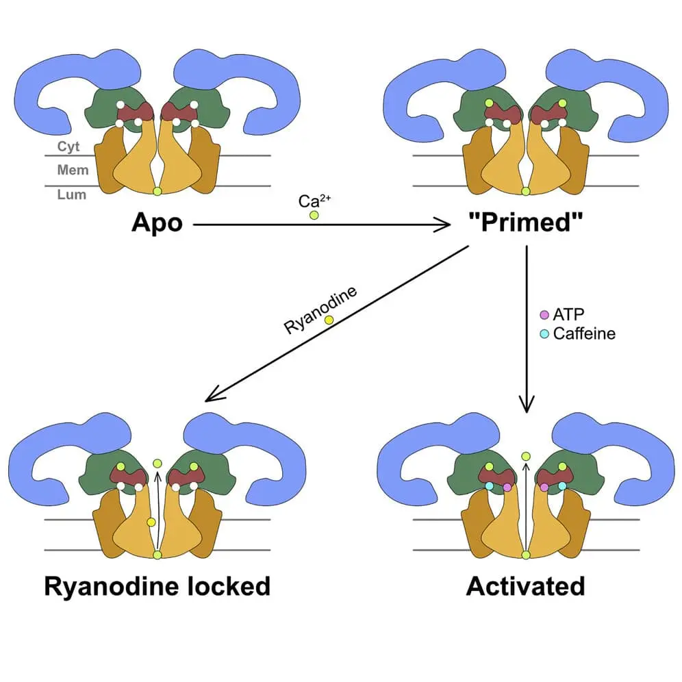
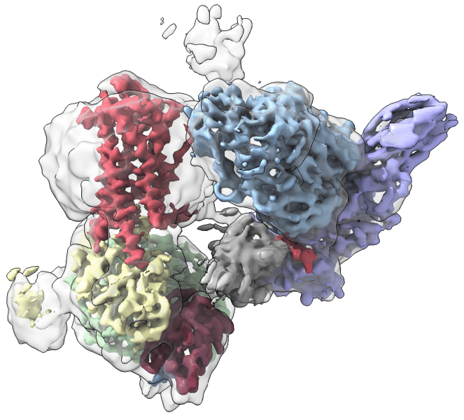
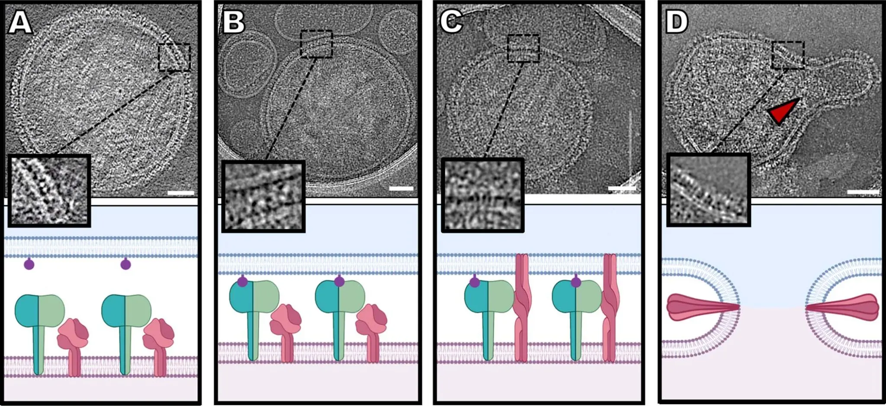
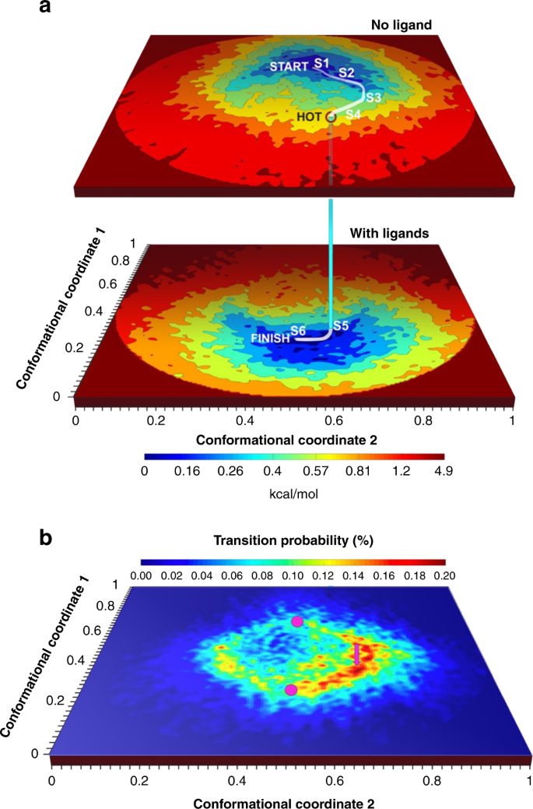
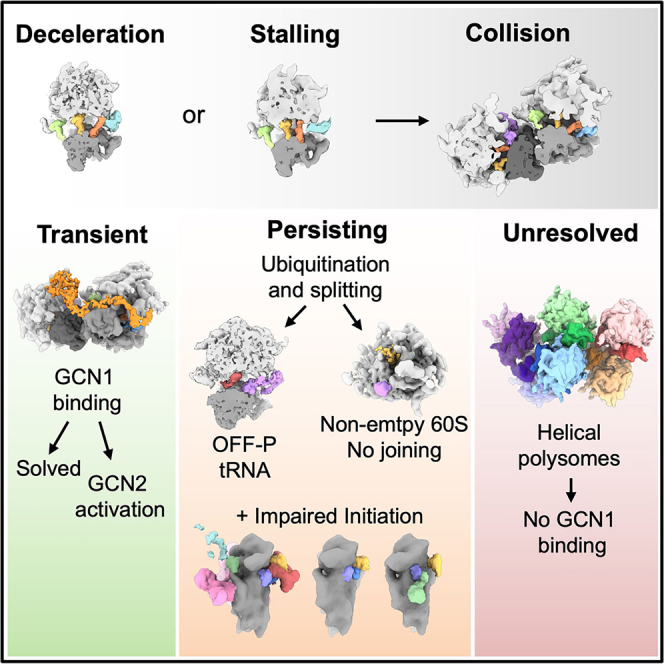

Research
Molecular machines in action.
Proteins sense signals, open channels, cross membranes, and build the machinery of life. We use cryo-electron microscopy, biophysics, and computation to discover how their changing shapes drive these remarkable functions—and how we can control them.
At the heart of our work is allostery: the ability of an interaction at one site to change what happens somewhere else. We explore this molecular conversation across three connected themes.
01 · Signaling at the membrane
How do molecular signals control protein activity?
From a calcium pulse that triggers muscle contraction to pain signals and membrane tension, cells respond to both chemical and mechanical cues. We uncover how these interactions switch proteins on and off.
Ryanodine receptors
How does one of the cell’s largest ion channels control a precisely timed burst of calcium? We investigate the structural changes that open and close ryanodine receptors, connecting their regulation to muscle function and disease. Our work reveals how calcium, nucleotides, and drugs such as dantrolene tune this molecular gate.


GPCRs and pain signaling
Cell-surface receptors translate outside messages into intricate signaling networks. We explore how GPCRs assemble with their partners, how β-arrestin activates downstream effectors, and how NGF receptor complexes transmit pain signals. By revealing these interactions, we seek new ways to tune signaling with greater precision.


Mechanosensation
How does a membrane protein sense tension in the surrounding membrane? We explore mechanosensitive channels such as MscS and YnaI, using cryo-EM and membrane-active polymers to study channels together with their surrounding lipids. By connecting protein structure with the membrane environment, we aim to reveal how mechanical forces become biological signals.
Selected work
- New membrane-active polymers for membrane protein studiesChem Sci · 2023Publication & data links
- YnaI and its surrounding membrane lipidsMembranes (Basel) · 2021Publication & data links
- Gating and activation of RyR1Cell · 2016Publication & data links
- RyR1 regulation by ADP and dantroleneNat Commun · 2026Publication & data links
- β-arrestin-mediated activation of SrcNat Commun · 2026Publication & data links
- Neuropilin-1 in NGF signaling and pain modelsJ Clin Invest · 2024Publication & data links
02 · Host–pathogen interactions
How do pathogens cross cellular membranes?
To enter a cell, pathogens must overcome its membrane barrier. We capture the molecular choreography of entry to reveal where—and how—it can be interrupted.
Viral membrane fusion
Viral proteins act together to bring two membranes into one. With our virology collaborators, we visualize this process on authentic parainfluenza viruses and capture fleeting intermediates in SARS-CoV-2 entry. These views expose the moving parts of the fusion machinery and the steps that entry inhibitors can trap.


Bacterial toxin entry
Bacterial toxins turn molecular assemblies into membrane-crossing devices. We study how the Clostridioides difficile binary toxin builds its entry machinery and how changing calcium levels trigger the structural transitions that allow it to form pores.
Selected work
03 · Molecular machines & dynamics
How can structural snapshots reveal molecular motion?
A structure is a snapshot. Function unfolds through motion. We develop ways to connect the two, revealing how large molecular machines move, coordinate their parts, and respond to their environment.
Methods for studying allostery
Hidden within cryo-EM images is a wealth of information about molecular motion. Together with computational collaborators, we combine machine learning, structural analysis, and simulations to uncover these movements and the allosteric networks behind them. Methods such as manifold embedding and ENRICH help us recover more of the story from structural snapshots.


Dashti et al., 2020, Fig. 1a · CC BY 4.0
Enlarge full figure ↗
Translation and its regulation
How does the ribosome find where to begin, navigate structured RNA, and respond when translation stalls? We explore the coordination of initiation factors, the role of DHX29 in mRNA scanning, and the reorganization of translation machinery under collision stress. These studies connect molecular movements with the control of protein production.


Fedry et al., 2024, graphical abstract · CC BY 4.0
Enlarge figure ↗
Selected work
- Recovering functional motions from cryo-EM snapshotsNat Commun · 2020Publication & data links
- ENRICH: improving flexible macromolecular reconstructionsProg Biophys Mol Biol · 2021Publication & data links
- Organization of eIF3 in the translation preinitiation complexNature · 2015Publication & data links
- Translation machinery under ribosome-collision stressMol Cell · 2024Publication & data links
- PreprintDHX29 and the mechanics of mRNA scanningbioRxiv · 2025Publication & data links